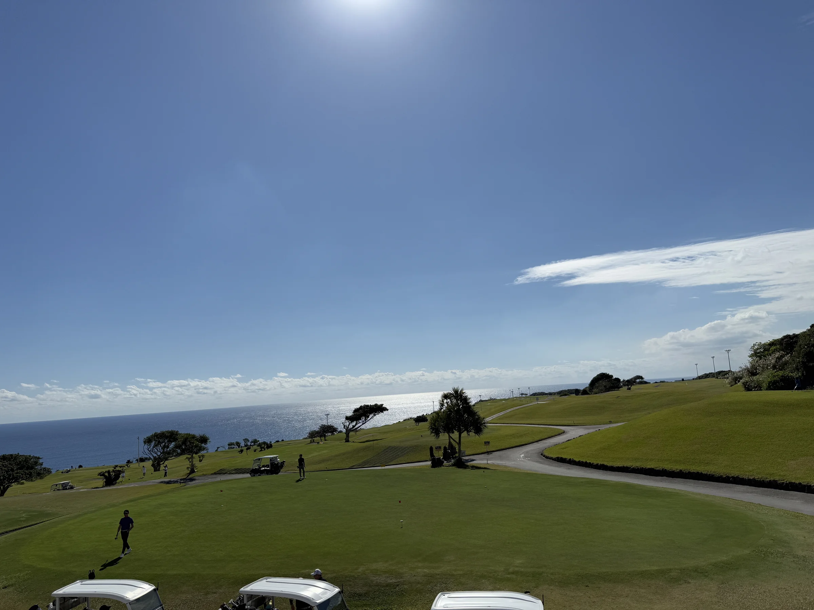

福岡の朝、海からの光。日本の一日を、ゴルフで始める。— 50コースの料金・アクセス・設備を比較できる、地元目線の独立系ガイド。
目的に合わせた入口で、最適なコースを。"初心者向け"から"接待・名門"まで、4つのテーマで50コースを再編。
🏁 福岡県全域を全5エリア・50コースに完全網羅。あなたの滞在先から近いコースが、すぐ見つかります。
山・海・森。福岡のゴルフ場は景観も多彩。その日の気分で、3つの景色から選べます。※写真は福岡・九州各地のゴルフ場で撮影したイメージです
名門・コスパ・観光・空港アクセスの4軸で、福岡50コースから選んだ「これだけ見れば充分」のTop 5×4ランキング。各コースの特徴・数値根拠付き。
50コースから「迷う」を解消。エリア → ペルソナ → 料金の順で絞り込めば、平均5分であなたに合う1コースに辿り着きます。
"空港近い" "温泉付き" "コスパ重視" — あなたのスタイルに合わせて。
ゴルフの合間に読みたい、旅・装備・移動のヒント。
モデルプラン・おすすめ宿・観光スポットまで。
手ぶらでゴルフ旅行を実現する方法。
桜・新緑・紅葉、福岡の四季をグリーンで。
30分圏内で即プレー。出張・弾丸ゴルフに。
15コース・国際空港25分圏内。名門から手頃まで。
6コース・玄界灘の絶景。観光とセットで週末プラン。
11コース・温泉と観光を組み合わせた黄金の1泊2日プラン。
8コース・博多/天神30分圏。観光&グルメと両立する都市型ゴルフ。
10コース・平日¥5,600〜（総額・11/1確認）のコスパ穴場。原鶴温泉&炭鉱遺産で素朴な1泊2日。
「福岡のゴルフ場、結局どう選べばいい?」その問いに、地理・歴史・料金構造・予約方法・訪日対応の5つの視点で答える完全ガイド。
福岡のゴルフ場は地理的多様性が最大の魅力。玄界灘を望む海沿いリンクス(芥屋GC・玄海GC)、福智山地・耳納連山を背景にした山岳コース(浮羽CC・あかねCC)、林間の落ち着いたフラットコース(福岡CC・久留米CC)と3つのタイプを近距離で楽しめます。
歴史的には福岡カンツリー倶楽部(1957年)・若松ゴルフ倶楽部(1959年)・小倉カンツリー倶楽部(1961年)が県内3大名門として知られ、いずれも会員制・伝統あるホスピタリティを保持。設計者は上田治・赤星弥次郎・島村祐正・ピータートムソンら名匠の手によるもので、戦略性と景観美を両立した名コースが揃います。接待・名門ハブで詳細を解説。
福岡ゴルフのベストシーズンは4-6月(春・新緑)と9-11月(秋晴れ・紅葉)。気温15-25℃で快適、フェアウェイのコンディションも最良。逆に1-2月(寒冷)・6-8月(梅雨・猛暑)はオフシーズンで、料金が大きく下がる狙い目。季節別おすすめを参照。
平日 vs 土日祝の料金差は、じゃらんの総額で土日祝が平日の約1.6倍（30コースの中央値・2026年11月1日確認、コースにより1.3〜2.4倍）。出張・在宅ワーク併用で平日プレーすれば皐月GC 竜王コース ¥5,600・福岡フェザントCC ¥5,989（総額）から回れます。休憩なしで18Hを回る午後スルーは半日向きですが、設定のあるコースは限られます（2026年11月前半のじゃらんで平日に確認できたのは4コース）。平日¥8,000以下で回れる11コース比較に確認日つきの最安価格表を掲載。コスパハブでテクニックを集約。
福岡のゴルフ場予約はじゃらんゴルフと楽天GORAが二大プラットフォーム。じゃらんはクーポン・ポイント還元が強み、楽天GORAは楽天ポイント連携と検索機能が充実。両サイトで料金が異なるケースもあるので料金比較表でチェック推奨。当日・明日予約OKコースでは即枠取得の4ステップ手順、1人予約に使いやすい11コースではソロゴルフの予約手順とマナーを解説しています。
名門コース(福岡CC・若松GC・小倉CC・玄海GC・久留米CC)はメンバー紹介必須。一般の予約サイトでは取れません。また3〜7日前のキャンセル料が発生するコースが多いので、天候不安時は早めの判断を。
福岡には2つの空港:福岡空港(FUK・市内10分)と北九州空港(KKJ・小倉40分)。FUKは福岡CC・久山CC等の北部エリアに、KKJは小倉CC・玄海GC等の北九州エリアにアクセス便利。空港アクセスTop5で詳細比較。
レンタカー必須エリアは糸島・筑後・筑豊。福岡市エリアの一部はタクシー・送迎バスでアクセス可。レンタカー&交通ガイドに詳細。韓国語予約対応は芥屋・玄海・クイーンズヒル等。英語対応は福岡国際CCをはじめリゾート系で進んでいます。
福岡のゴルフ場について、地元目線で多い質問10問に回答。料金・名門・空港・観光・訪日対応・季節・1泊2日プランまで網羅。
English / 한국어 での詳細情報も完備。言語スイッチャーからご覧いただけます。
福岡空港から車で30分圏内の主要コースを特集。
skyticket レンタカー経由で最大50%OFF。
温泉・博多グルメを組み合わせた旅プラン。
福岡ゴルフ場ガイドの全コンテンツを5列で総覧。50コース紹介・50アクセス情報・5エリアガイド・4ペルソナハブ・主要記事まで網羅。